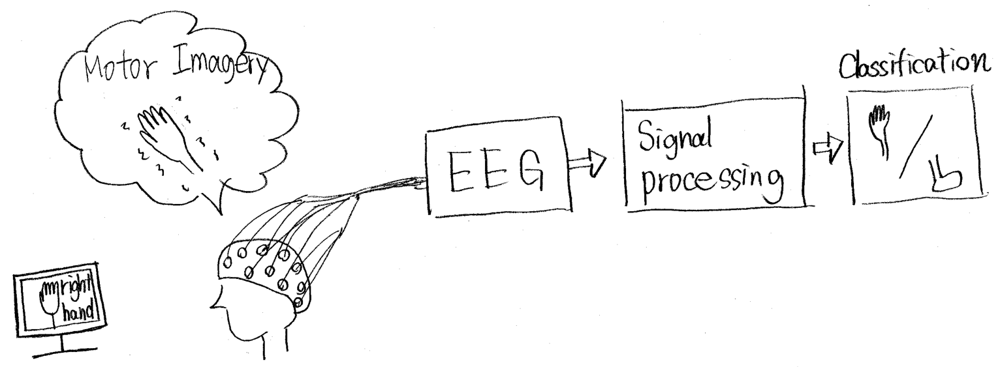
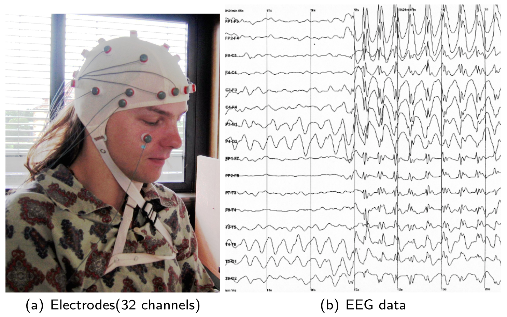
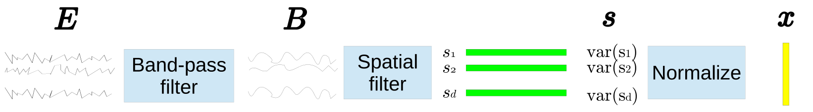
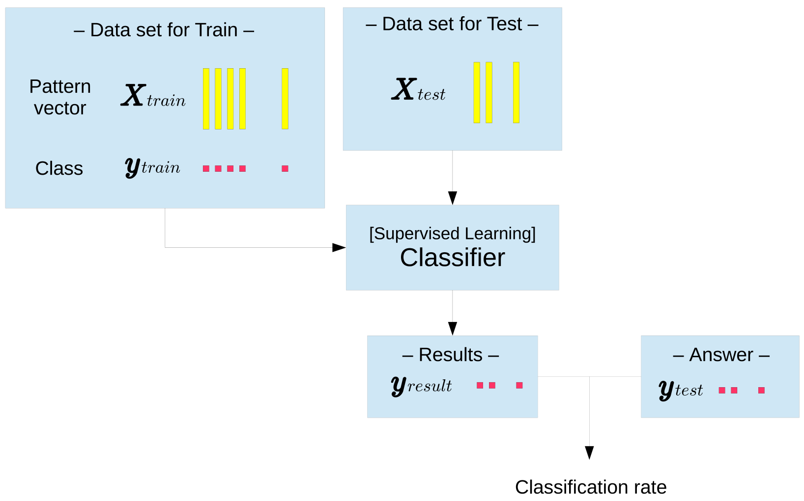
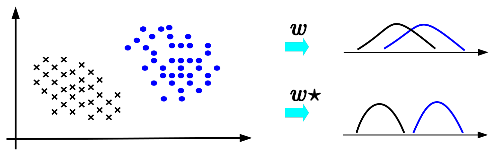
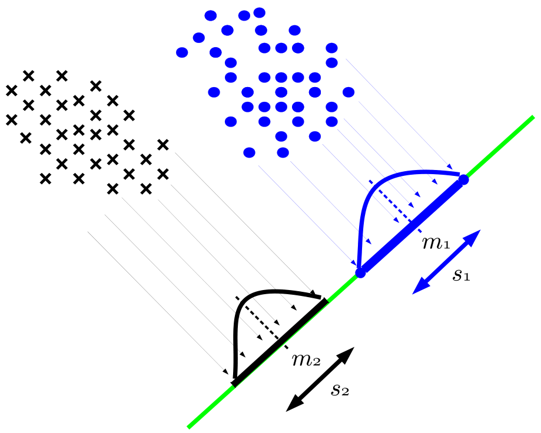
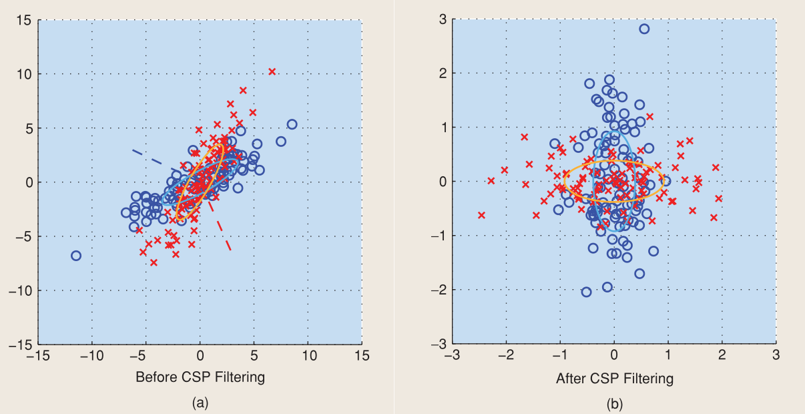
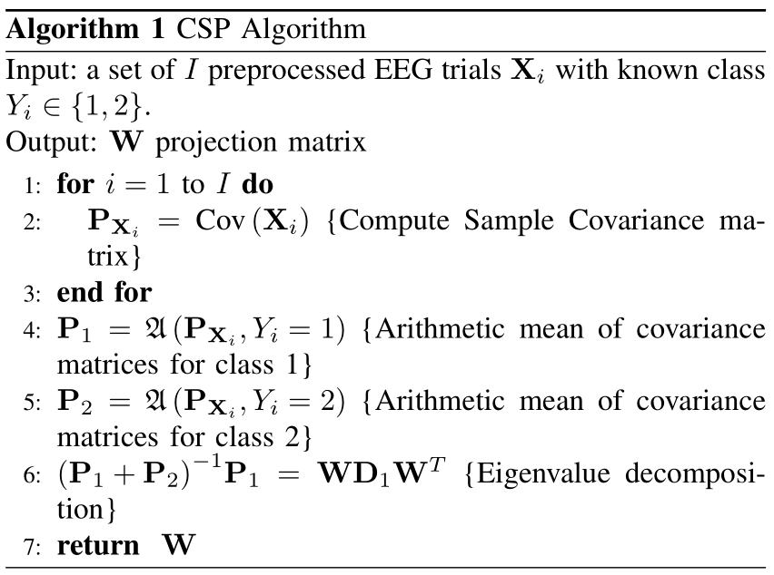
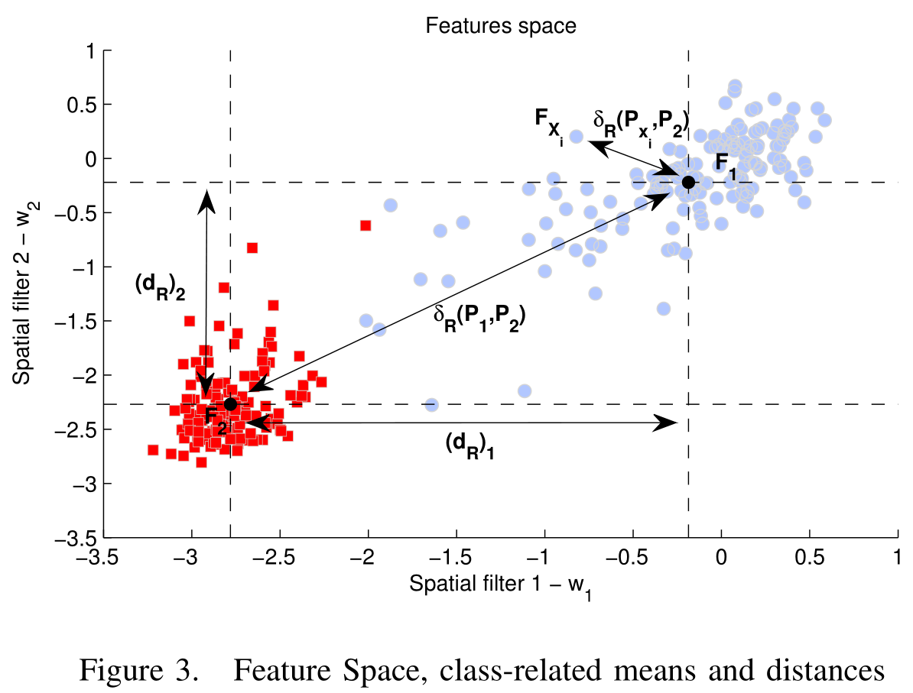

写在前面 介绍共空间模式算法(Common Spatial Patterns)，本文主要参考了slide
脑机接口 使用仪器收集脑电信号并进行信号分类，里面包含一系列信号处理技术，这里只介绍信号分类的关键步骤。

EEG信号采样 多通道、非平稳的EEG信号数学表示为
{ E n } n = 1 N ∈ R c h × t i m e \{E_n\}_{n=1}^{N} \in \mathbb{R}^{ch\times time}
{ E n } n = 1 N ∈ R c h × t i m e
信号本身核采集过程中包含大量噪声以及无意义的信息，因此下一步就是提取出有甄别信息的特征。

p.s. 通道数与传感器个数有关，早期脑机接口是侵入式的，给瘫痪病人用的，现在是头戴式，不过受试者收集信号都说累（需要注意力高度集中），以后应该就是多维度（EEG、眼动式、语音等信息融合）（？大胆猜测）
特征提取 下面就要完成信号到特征的转化
{ E n } n = 1 N ∈ R c h × t i m e → x n ∈ R d \{E_n\}_{n=1}^{N} \in \mathbb{R}^{ch\times time} \to x_n \in \mathbb{R}^d
{ E n } n = 1 N ∈ R c h × t i m e → x n ∈ R d

带宽滤波器：选择合适的带宽（如7-30Hz或10-40Hz）来降噪并提取有利于分类的最佳频率，这一步是通过长期经验来确定的。 空间滤波器：选择重要的通道信号来完成分类，共空间模式算法是一种典型的空间滤波器。 线性判别分析 上一步从训练集得到的特征通过监督(或半监督)算法训练分类器(分类参数)，训练完成后可直接用于测试集。

下面介绍一种经典的监督分类算法——线性判别分析 ，它是基于各模式的类间散度和类内散度所构成广义瑞利商的最大化来求得最优超平面。我们知道，空间样本点在不同的投影下的投影点具有不同的离散程度

为了让投影点更好的区分开来，我们期望
那么两者需要量化。

同类投影点尽可能接近：投影范围内的最大距离s s s 异类投影点尽可能远离：两类投影有明显的间隔，则均值点间的距离Δ m \Delta m Δ m 一小一大，自然联想到构造瑞利商形式的目标函数
max w J ( w ) = ( m 1 − m 2 ) 2 s 1 + s 2 \max_w J(w) = \frac{(m_1 -m_2)^2}{s_1+s_2}
w max J ( w ) = s 1 + s 2 ( m 1 − m 2 ) 2
( m 1 − m 2 ) 2 = ( w T μ 1 − w T μ 2 ) ( w T μ 1 − w T μ 2 ) T = w T ( μ 1 − μ 2 ) ( μ 1 − μ 2 ) T w = w T S B w s 1 + s 2 = w T Σ 1 w + w T Σ 2 w = w T ( Σ 1 + Σ 2 ) w = w T S W w \begin{aligned}
\left(m_{1}-m_{2}\right)^{2}=&\left(\boldsymbol{w}^{T} \boldsymbol{\mu}_{1}-\boldsymbol{w}^{T} \boldsymbol{\mu}_{2}\right)\left(\boldsymbol{w}^{T} \boldsymbol{\mu}_{1}-\boldsymbol{w}^{T} \boldsymbol{\mu}_{2}\right)^{T} \\
=& \boldsymbol{w}^{T}\left(\boldsymbol{\mu}_{1}-\boldsymbol{\mu}_{2}\right)\left(\boldsymbol{\mu}_{1}-\boldsymbol{\mu}_{2}\right)^{T} \boldsymbol{w}=\boldsymbol{w}^{T} \boldsymbol{S}_{B} \boldsymbol{w} \\
s_{1}+s_{2} &=\boldsymbol{w}^{T} \boldsymbol{\Sigma}_{1} \boldsymbol{w}+\boldsymbol{w}^{T} \boldsymbol{\Sigma}_{2} \boldsymbol{w} \\
&=\boldsymbol{w}^{T}\left(\boldsymbol{\Sigma}_{1}+\boldsymbol{\Sigma}_{2}\right) \boldsymbol{w}=\boldsymbol{w}^{T} \boldsymbol{S}_{W} \boldsymbol{w}
\end{aligned}
( m 1 − m 2 ) 2 = = s 1 + s 2 ( w T μ 1 − w T μ 2 ) ( w T μ 1 − w T μ 2 ) T w T ( μ 1 − μ 2 ) ( μ 1 − μ 2 ) T w = w T S B w = w T Σ 1 w + w T Σ 2 w = w T ( Σ 1 + Σ 2 ) w = w T S W w
目标函数等价为
max w J ′ ( w ) = w T S B w w T S W w \max_w J^\prime(w) =\frac{w^T \boldsymbol S_B w}{w^T \boldsymbol S_W w}
w max J ′ ( w ) = w T S W w w T S B w
分子分母均为w w w w ^ \hat w w ^ J ( w ) = J ( k w ) ∀ k J(w) = J(kw)\quad\forall k J ( w ) = J ( k w ) ∀ k w T S W w = 1 w^T \boldsymbol S_W w= 1 w T S W w = 1
min w − w T S B w s.t. w T S W w = 1 \min_w - w^T \boldsymbol S_B w \quad\text{s.t.} \quad w^T \boldsymbol S_W w = 1
w min − w T S B w s.t. w T S W w = 1
构造拉格朗日函数
L ( w , λ ) = − w T S B w + λ ( w T S W w − 1 ) L(w,\lambda) = - w^T \boldsymbol S_B w + \lambda(w^T \boldsymbol S_W w - 1)
L ( w , λ ) = − w T S B w + λ ( w T S W w − 1 )
函数对w w w 0 0 0
S B w = λ S W w \boldsymbol S_B w = \lambda \boldsymbol S_W w
S B w = λ S W w
其中S W w \boldsymbol S_W w S W w μ 1 − μ 2 \mu_1 - \mu_2 μ 1 − μ 2
w ^ ∝ S W − 1 ( μ 1 − μ 2 ) \hat w \propto\boldsymbol S_W^{-1}(\mu_1 - \mu_2)
w ^ ∝ S W − 1 ( μ 1 − μ 2 )
对任意样本点x x x z 0 = m 1 + m 2 2 z_0 = \frac{m_1 + m_2}{2} z 0 = 2 m 1 + m 2
共空间模式算法 共空间模式算作为一种空间滤波器，其目的与线性判别分析类似，即期望通过投影将不同类别的分布尽可能区分开来，其解释如下：
CSP FILTERS MAXIMIZE THE VARIANCE OF THE SPATIALLY FILTERED SIGNAL UNDER ONE CONDITION WHILE MINIMIZING IT FOR THE OTHER CONDITION.

对收集到的信号E E E S = w T E S = w^TE S = w T E
max w J ( w ) = w T ( Σ 1 − Σ 2 ) w w T ( Σ 1 + Σ 2 ) w \max_w J(w) =\frac{w^T (\Sigma_1 - \Sigma_2) w}{w^T (\Sigma_1 + \Sigma_2) w}
w max J ( w ) = w T ( Σ 1 + Σ 2 ) w w T ( Σ 1 − Σ 2 ) w
Σ 1 − Σ 2 \Sigma_1 - \Sigma_2 Σ 1 − Σ 2 discriminative activity 有利于分类的特征Σ 1 + Σ 2 \Sigma_1 + \Sigma_2 Σ 1 + Σ 2 common activity 属于不感兴趣的信息从瑞利商角度，该目标存在如下等价形式
max w J ′ ( w ) = w T Σ 1 w w T Σ 2 w \max_w J^\prime(w) =\frac{w^T \Sigma_1 w}{w^T \Sigma_2 w}
w max J ′ ( w ) = w T Σ 2 w w T Σ 1 w
该问题与线性判别分析的求解步骤一致，可转化为一个特征值问题
Σ 2 − 1 Σ 1 w = λ w \Sigma_2^{-1}\Sigma_1 w=\lambda w
Σ 2 − 1 Σ 1 w = λ w
CSP问题也可等价为矩阵形式
max W tr ( W T Σ 1 W ) s.t. W T ( Σ 1 + Σ 2 ) W = I \max_W \text{tr}(W^T \Sigma_1 W)\quad \text{s.t.} \quad W^T(\Sigma_1 + \Sigma_2)W = \boldsymbol{I}
W max tr ( W T Σ 1 W ) s.t. W T ( Σ 1 + Σ 2 ) W = I
该问题类似于矩阵的联合对角化 问题(可参见白化变换Whitening )，通过特征值分解可得
Σ 1 + Σ 2 = U D U T P = D − 1 2 Σ ^ 1 = P Σ 1 P T Σ ^ 2 = P Σ 2 P T \begin{aligned}
\Sigma_1 + \Sigma_2 &= UDU^T\\
P &= D^{-\frac{1}{2}}\\
\hat\Sigma_1 &= P\Sigma_1P^T\\
\hat\Sigma_2 &= P\Sigma_2P^T
\end{aligned}
Σ 1 + Σ 2 P Σ ^ 1 Σ ^ 2 = U D U T = D − 2 1 = P Σ 1 P T = P Σ 2 P T
显然Σ ^ 1 + Σ ^ 2 = I \hat\Sigma_1 + \hat\Sigma_2 = \boldsymbol{I} Σ ^ 1 + Σ ^ 2 = I V V V V T ( Σ ^ 1 + Σ ^ 2 ) V = I V^T (\hat\Sigma_1 + \hat\Sigma_2) V = \boldsymbol{I} V T ( Σ ^ 1 + Σ ^ 2 ) V = I V V V Σ ^ 1 \hat\Sigma_1 Σ ^ 1
Σ ^ 1 = V Λ V T \hat\Sigma_1 = V \boldsymbol{\Lambda} V^T
Σ ^ 1 = V Λ V T
其中对角矩阵Λ \boldsymbol{\Lambda} Λ
W = P T V W = P^T V
W = P T V
两协方差投影后得到对角阵
W T Σ 1 W = Λ = ( λ 1 ⋱ λ c h ) W T Σ 2 W = I − Λ = ( 1 − λ 1 ⋱ 1 − λ c h ) \begin{array}{l}
W^{T} {\Sigma}_{1} W=\boldsymbol{\Lambda}=\left(\begin{array}{ccc}
\lambda_{1}&& \\
& \ddots & \\
& &\lambda_{ch}
\end{array}\right) \\
W^{T} {\Sigma}_{2} W=\boldsymbol{I}-\boldsymbol{\Lambda}=\left(\begin{array}{cc}
1-\lambda_{1}&& \\
& \ddots & \\
& &1-\lambda_{ch}
\end{array}\right)
\end{array}
W T Σ 1 W = Λ = ⎝ ⎛ λ 1 ⋱ λ c h ⎠ ⎞ W T Σ 2 W = I − Λ = ⎝ ⎛ 1 − λ 1 ⋱ 1 − λ c h ⎠ ⎞
这表明投影W W W λ 1 , … , λ c h \lambda_1,\ldots,\lambda_{ch} λ 1 , … , λ c h 1 − λ 1 , … , 1 − λ c h 1-\lambda_1,\ldots,1-\lambda_{ch} 1 − λ 1 , … , 1 − λ c h
正则化共空间模式 正则化，顾名思义，就是添加一些由先验信息或假设而产生的正则项，来改进或约束目标函数。
由于噪声和小样本集的缘故，协方差矩阵的估计存在明显的误差，因此修正协方差矩阵非常有必要。
C c ~ = ( 1 − γ ) [ ( 1 − β ) s c C c + β G C ] + γ I \tilde{C_c} = (1-\gamma)\left[(1-\beta)s_cC_c+\beta G_C \right]+\gamma I
C c ~ = ( 1 − γ ) [ ( 1 − β ) s c C c + β G C ] + γ I
其中C c C_c C c I I I G c G_c G c
我想让事情是它该有的样子
对目标函数增加正则项可以惩罚不满足先验信息的空间滤波器
max w J P 1 ( w ) = w T Σ 1 w w T Σ 2 w + α P ( w ) \max_w J_{P_1}(w) =\frac{w^T \Sigma_1 w}{w^T \Sigma_2 w + \alpha P(w)}
w max J P 1 ( w ) = w T Σ 2 w + α P ( w ) w T Σ 1 w
一些简单的先验信息都可以通过二次惩罚项表示，即设置P ( w ) = ∥ w ∥ K 2 = w T K w P(w) = \|w\|_K^2 = w^TKw P ( w ) = ∥ w ∥ K 2 = w T K w
最大化Σ 1 \Sigma_1 Σ 1 Σ 2 \Sigma_2 Σ 2 最大化Σ 2 \Sigma_2 Σ 2 Σ 1 \Sigma_1 Σ 1 为此还需考虑对立问题
max w J P 2 ( w ) = w T Σ 2 w w T Σ 1 w + α P ( w ) \max_w J_{P_2}(w) =\frac{w^T \Sigma_2 w}{w^T \Sigma_1 w + \alpha P(w)}
w max J P 2 ( w ) = w T Σ 1 w + α P ( w ) w T Σ 2 w
因此滤波器由( Σ 2 + α K ) − 1 Σ 1 (\Sigma_2 + \alpha K)^{-1}\Sigma_1 ( Σ 2 + α K ) − 1 Σ 1 ( Σ 1 + α K ) − 1 Σ 2 (\Sigma_1 + \alpha K)^{-1}\Sigma_2 ( Σ 1 + α K ) − 1 Σ 2
黎曼流形的几何解释 首先给出CSP的联合对角化的求解算法流程(Σ 2 , Σ 1 \Sigma_2,\Sigma_1 Σ 2 , Σ 1 P 1 , P 2 P_1,P_2 P 1 , P 2

通常选取J ( < N ) J(<N) J ( < N ) log variance )作为特征的一种选择
F X = ( log ( var ( w 1 T X ) ) ⋮ log ( var ( w J T X ) ) ) \begin{array}{l}
F_X=\left(\begin{array}{c}
\log(\text{var}(w_1^T X)) \\
\vdots \\
\log(\text{var}(w_J^T X))
\end{array}\right)
\end{array}
F X = ⎝ ⎜ ⎜ ⎛ log ( var ( w 1 T X ) ) ⋮ log ( var ( w J T X ) ) ⎠ ⎟ ⎟ ⎞
引入一些常见的微分几何的概念(主要服务于计算距离和几何均值)，利用酉变换不变性的性质给空间滤波器赋予几何解释。回到CSP算法最后求解的特征分解问题
( Σ 1 + Σ 2 ) − 1 Σ 1 w j = λ j w j (\Sigma_1 + \Sigma_2)^{-1}\Sigma_1 w_j= \lambda_j w_j
( Σ 1 + Σ 2 ) − 1 Σ 1 w j = λ j w j
联合对角化的结果表明
W T Σ 1 W = Λ , W T Σ 2 W = I − Λ W^{T} {\Sigma}_{1} W=\boldsymbol{\Lambda},
W^{T} {\Sigma}_{2} W=\boldsymbol{I}-\boldsymbol{\Lambda}
W T Σ 1 W = Λ , W T Σ 2 W = I − Λ
而两协方差Σ 1 , Σ 2 \Sigma_1,\Sigma_2 Σ 1 , Σ 2
δ R ( Σ 1 , Σ 2 ) = δ R ( W T Σ 1 W , W T Σ 2 W ) = δ R ( Λ , I − Λ ) = ∑ j log 2 ( λ j 1 − λ j ) = ∥ d R ∥ 2 \begin{aligned}
\delta_R (\Sigma_1, \Sigma_2) &= \delta_R (W^T\Sigma_1 W, W^T \Sigma_2 W) \\
&= \delta_R (\boldsymbol{\Lambda}, \boldsymbol{I}-\boldsymbol{\Lambda}) \\
&= \sqrt{\sum_j\log^2(\frac{\lambda_j}{1-\lambda_j})}\\
&= \|d_R\|_2
\end{aligned}
δ R ( Σ 1 , Σ 2 ) = δ R ( W T Σ 1 W , W T Σ 2 W ) = δ R ( Λ , I − Λ ) = j ∑ log 2 ( 1 − λ j λ j ) = ∥ d R ∥ 2
其中记( d R ) j = ∣ log ( λ j 1 − λ j ) ∣ (d_R)_j = |\log(\frac{\lambda_j}{1-\lambda_j})| ( d R ) j = ∣ log ( 1 − λ j λ j ) ∣
对于特征提取的几何解释，使用测试样本协方差P X P_X P X W W W P Z P_Z P Z D Z = diag ( diag ( P Z ) ) D_Z = \text{diag}(\text{diag}(P_Z)) D Z = diag ( diag ( P Z ) )
δ R ( Σ 1 , Σ X ) = δ R ( W T Σ 1 W , W T Σ X W ) = δ R ( Λ , P Z ) ≃ δ R ( Λ , D Z ) \begin{aligned}
\delta_R (\Sigma_1, \Sigma_X) &= \delta_R (W^T\Sigma_1 W, W^T \Sigma_X W) \\
&= \delta_R (\boldsymbol{\Lambda}, P_Z) \\
&\simeq \delta_R (\boldsymbol{\Lambda}, D_Z) \\
\end{aligned}
δ R ( Σ 1 , Σ X ) = δ R ( W T Σ 1 W , W T Σ X W ) = δ R ( Λ , P Z ) ≃ δ R ( Λ , D Z )
对投影向量的方差取对数得到的特征向量F X F_X F X
δ R ( Σ 1 , Σ X ) ≃ ∥ F X − F 1 ∥ 2 \delta_R (\Sigma_1, \Sigma_X) \simeq \|F_X - F_1\|_2
δ R ( Σ 1 , Σ X ) ≃ ∥ F X − F 1 ∥ 2

CSP的黎曼距离代表欧式特征空间中欧式距离的近似。 因此，基于黎曼距离的空间滤波器选择可隐式确保特征空间中类的最大可分离性。
参考文献